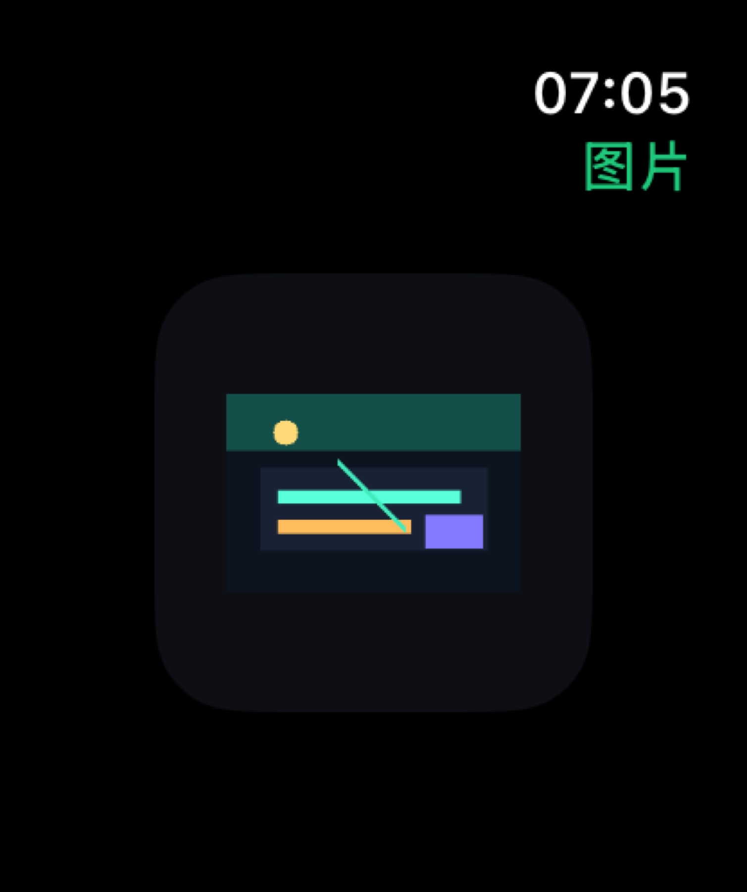
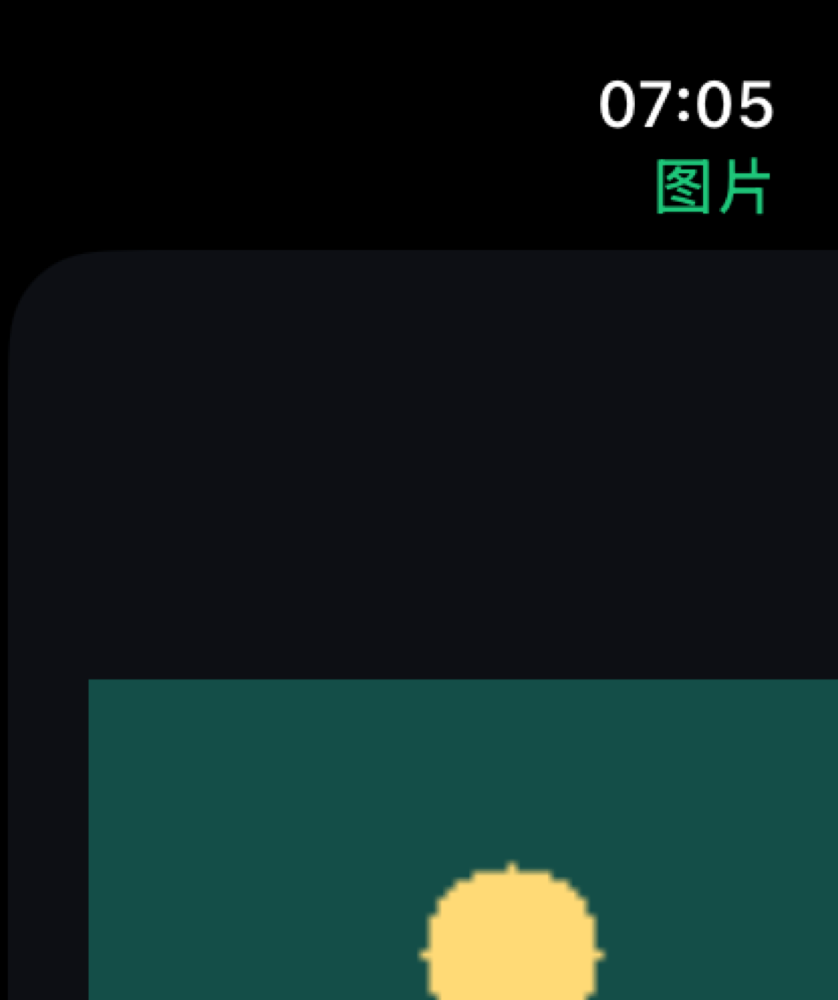

Problem
Apple Watch has strong native input methods, but AI answers can become unreadable when code, long text, and images are forced into a tiny screen.
AI Research and Application Consultant Evidence
A small-screen AI assistant used as a practical test bed for model setup, API-key handling, streaming responses, code readability, and multimodal output constraints.
Apple Watch has strong native input methods, but AI answers can become unreadable when code, long text, and images are forced into a tiny screen.
I tested streaming output, provider switching, saved API keys, model presets, syntax-highlighted code blocks, and image cards that can open into a zoomable detail view.
The project shows how I can translate emerging AI capabilities into a guide, demo, or workshop that explains tradeoffs instead of only showing a flashy prototype.




Streaming UX
Responses can appear progressively, which makes the watch feel responsive even when the model is still generating.
Readable Code
Code blocks use monospaced type, line numbers, syntax color, and horizontal scrolling so structure is not destroyed by narrow wrapping.
Multimodal Output
Image answers render as cards, open into a centered detail page, and support digital-crown zoom for close inspection.
Configuration
Provider/model selection and saved API keys make the tool usable across multiple AI services without re-entering credentials every launch.
GitHub
The public repository contains the watchOS source code, provider adapters, streaming transport, code block renderer, image detail viewer, privacy checklist, and local build instructions.